Префектура Нагано · Нодзава онсэн · онсэны и лыжи
Нодзава онсэн: горячая вода веками и сто лет на лыжах в деревне на севере Нагано
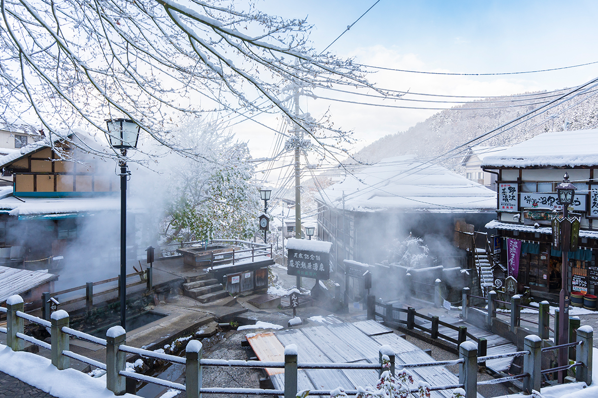
Нодзава онсэн это единственная деревня в Японии, в названии которой есть слово «онсэн». Здесь больше тысячи лет купаются в горячей воде и уже сто лет катаются на лыжах, а рядом со старыми купальнями открываются музыкальный бар, пивоварня и винокурня джина.
История
Деревня, названная по горячей воде
В Японии около 27 000 горячих источников. Когда-то к ним ездили лечиться и подолгу жили при водах, потом онсэны стали местом отдыха, где вместе с купанием знакомятся с местной жизнью. Всё больше городков и деревень развивают свои онсэны, сохраняя историю, облик улиц и обычаи.
Нодзава онсэн лежит на севере префектуры Нагано, среди огромных буковых лесов. Воды здесь много, она приходит на поверхность свежей, и онсэн считают одним из лучших в стране. Кто его открыл, точно не знают. По одной версии, источник нашёл монах Гёки, по другой, горные отшельники ямабуси, которые проходили здесь свои испытания.
Вехи истории:
- первая половина VIII века: по преданию, монах Гёки находит в Нодзаве горячий источник;
- период Эдо: владетели княжества Иияма из рода Мацудайра строят у купальни Ою загородную резиденцию и разрешают простым людям приезжать сюда лечиться;
- 1923 год: основан лыжный клуб Нодзава онсэна;
- 1924 год: открывается лыжный курорт;
- 1998 год: на курорте проходят соревнования по биатлону Олимпийских игр в Нагано;
- 2024 год: лыжному курорту исполняется сто лет.
Купальни
Тринадцать сотою, которые держат сами жители
Память о временах, когда сюда ездили лечиться, хранят тринадцать общественных купален, разбросанных по деревне. Их называют «сотою», то есть «внешние купальни», в отличие от ванн в гостиницах. Вода в них полностью природная и течёт без остановки, её не гоняют по кругу.
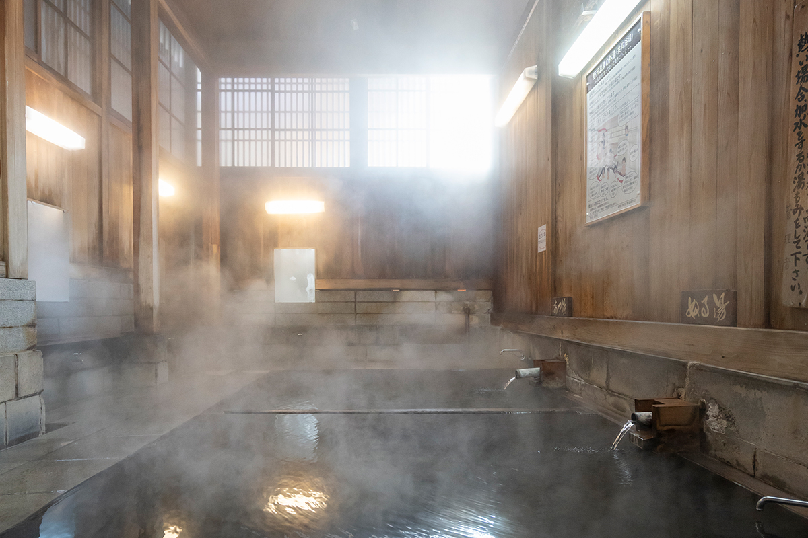
«Сотою это общее достояние деревни. С давних времён их берегут „юнакама“, товарищества купальщиков, такие есть только у нас»
депутат сельского собрания
Каждое товарищество само платит за электричество и воду своей купальни, а члены по очереди моют её каждый день. Для жителей это место, где снимают усталость после работы, и заменить его нечем.
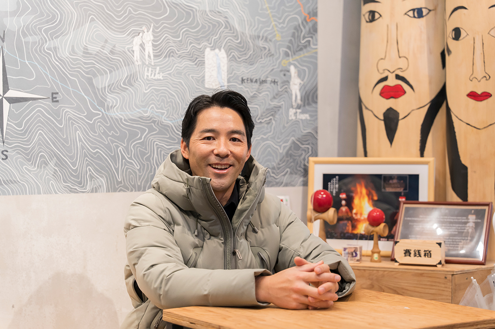
«Мы хотим, чтобы гости знакомились в сотою с жителями деревни такими, какие они есть»
депутат сельского собрания
Так и выходит. В купальне с вами здороваются, иногда подсказывают, как правильно заходить в воду, и чужая будничная жизнь смешивается с вашим праздником: блаженным купанием, после которого будто заново родился. Такое странное и приятное чувство трудно найти где-то ещё.
Ою: главная купальня деревни
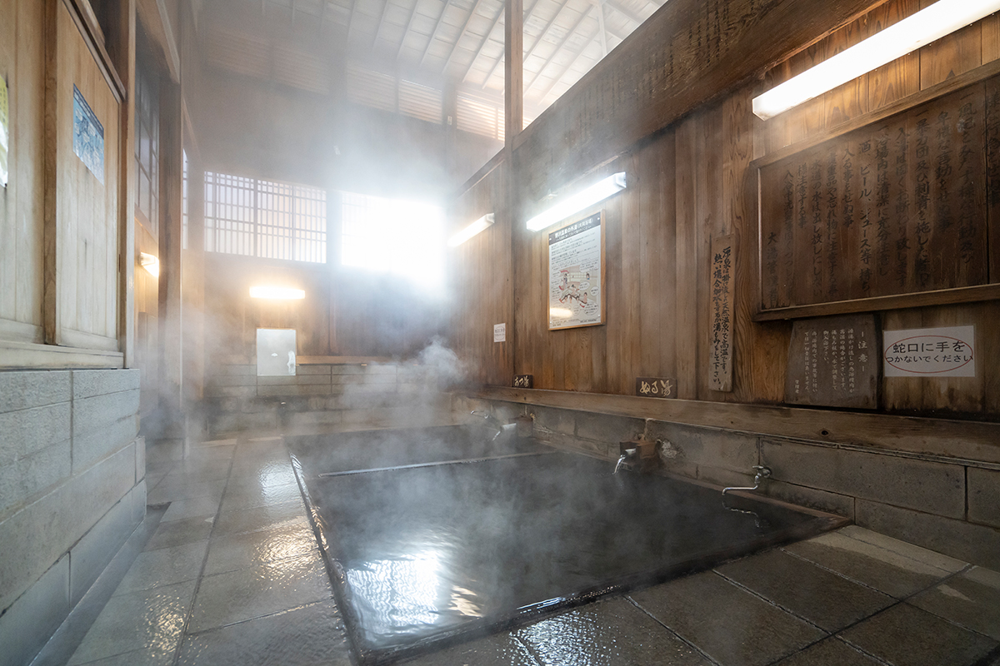
Самая популярная из купален стоит в центре онсэна. Вода простая сернистая, у выхода из земли около 66 градусов, и течёт она прямо в бассейны.
Купальня Ою
- Адрес
- префектура Нагано, уезд Симотакаи, деревня Нодзава онсэн, Тоёсато, 8765
- Часы работы
- апрель–ноябрь 5:00–23:00, декабрь–март 6:00–23:00
- Выходные
- без выходных
Кума-но тэараи-ю: купальня раненого медведя
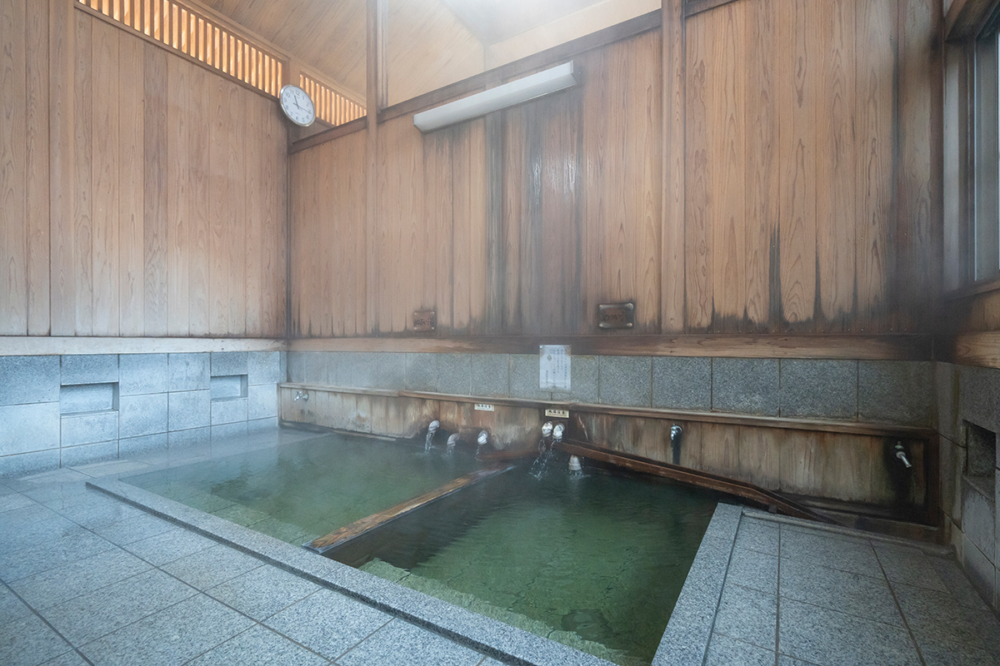
Название так и переводится: «купальня, где медведь мыл лапы». Вода тоже простая сернистая, но мягче, около 40 градусов на выходе.
Купальня Кума-но тэараи-ю
- Адрес
- префектура Нагано, уезд Симотакаи, деревня Нодзава онсэн, Тоёсато, 8955
- Часы работы
- апрель–ноябрь 5:00–23:00, декабрь–март с 6:00
- Выходные
- без выходных
Синъю: вода, от которой гладкая кожа
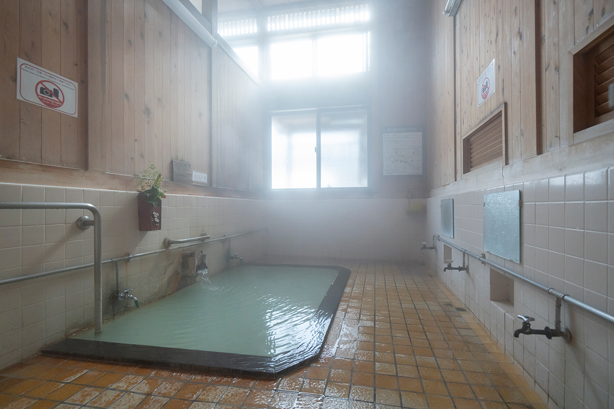
Вода выходит из земли при температуре около 55 градусов. После купания кожа становится заметно глаже, за это её и любят.
Купальня Синъю
- Адрес
- префектура Нагано, уезд Симотакаи, деревня Нодзава онсэн, Тоёсато, 8278-2
- Часы работы
- 6:00–22:00
- Выходные
- без выходных
Лыжи
Сто лет на склонах среди буков
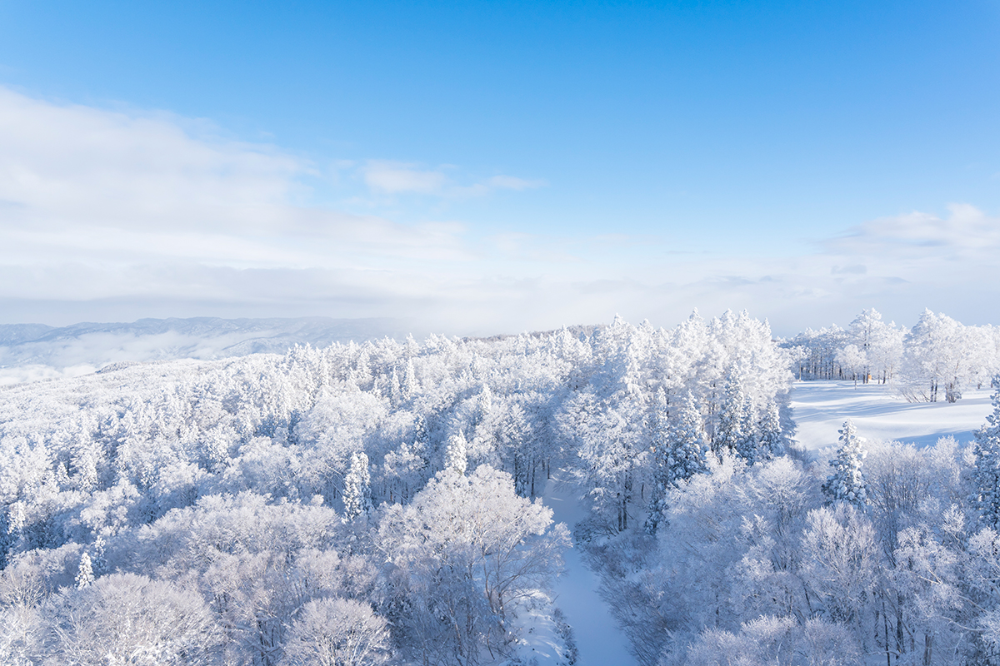
Говорить о Нодзава онсэне и не упомянуть лыжный курорт нельзя. Его открыл местный лыжный клуб в 1924 году, когда лыжи в Японии ещё не стали массовым увлечением, и в 2024 году курорту исполнилось сто лет. Это один из первых настоящих горнолыжных курортов страны, а в 1998 году здесь соревновались биатлонисты Олимпийских игр в Нагано.
Главное богатство склонов это пудра, глубокий лёгкий снег. Депутат сельского собрания в прошлом выступал за сборную Японии по фристайлу в хафпайпе.
«За ночь здесь может выпасть 70 см снега. Глубокая пудра в меру влажная, по качеству одна из лучших в мире, и кататься по ней невероятно»
депутат сельского собрания, бывший член сборной Японии по фристайлу
Снег и дождь падают на буковый лес, около 50 лет просачиваются сквозь толщу земли, очищаются и снова выходят на поверхность родниками и горячей водой. Если после катания думать об этом круговороте, сидя в горячем источнике, Нодзаву понимаешь глубже.
Подъёмников на склонах 13: пять двухместных, два трёхместных и шесть четырёхместных, а ещё две гондолы.
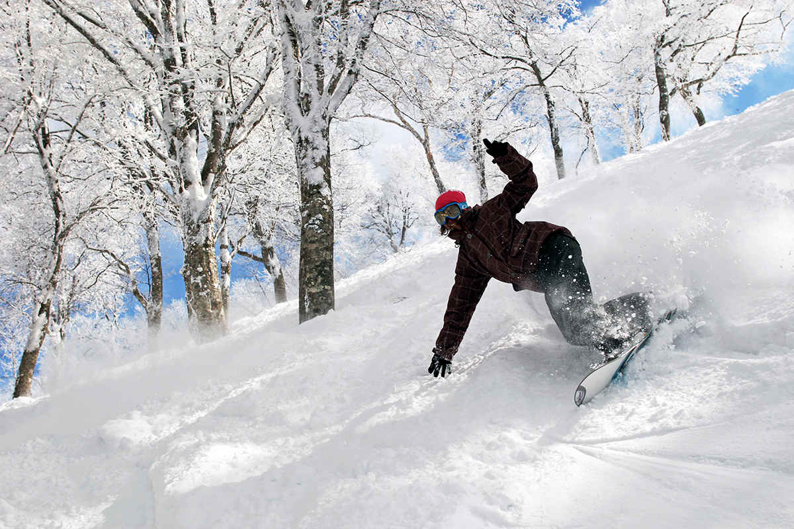
Лыжный курорт Нодзава онсэн
- Адрес
- префектура Нагано, уезд Симотакаи, деревня Нодзава онсэн, Тоёсато, 7653
- Даты
- сезон 2024/25 продлился до 6 мая 2025 года
- Сайт
- nozawaski.com
Снаряжение можно купить в COMPASS VILLAGE.
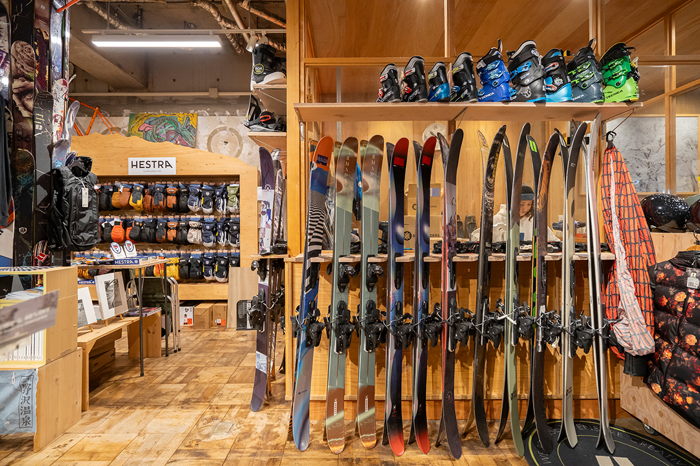
COMPASS VILLAGE
- Адрес
- префектура Нагано, уезд Симотакаи, деревня Нодзава онсэн, Тоёсато, 9526
- Телефон
- +81 269-67-0921
- Часы работы
- 8:00–20:00, летом 9:00–18:00
- Выходные
- зимой без выходных, летом вторник
- Сайт
- compasshouse.jp
Купаться
Рёкан «Сакая»: купальня храмовых плотников
Характер Нодзава онсэна виден и в его архитектуре. Купальни сотою хороши сами по себе, но самая знаменитая постройка для купания здесь это «Така-но ю», мужская купальня рёкана «Сакая». Гостиницу держит одна семья уже восемнадцать поколений.
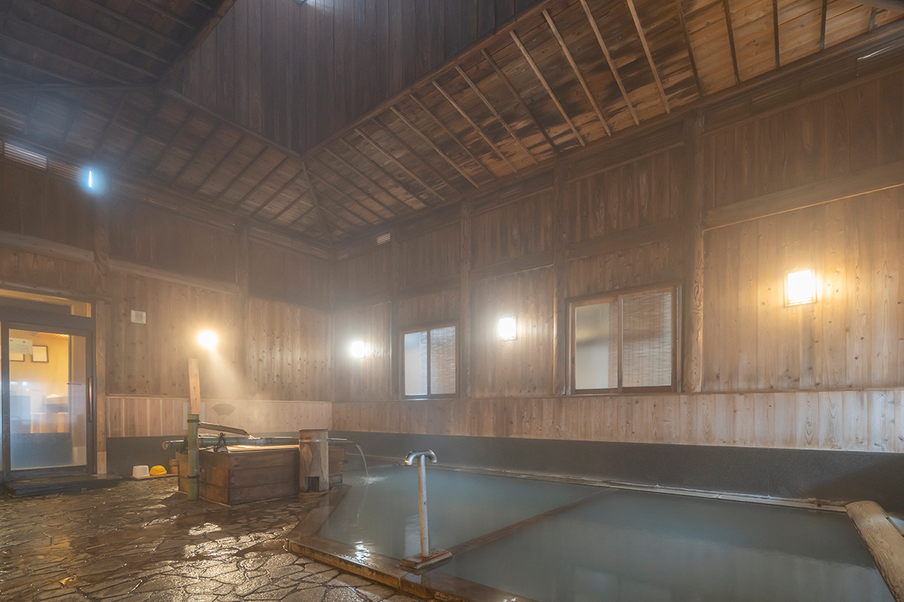
Купальню строили храмовые плотники в традиционном стиле банных зданий, и её строгая красота действует с порога. Пар поднимается в полутёмном деревянном зале к надстройке с окнами над главной крышей, и оттуда падает мягкий таинственный свет. Лежишь в тишине в проточной воде, и мелкие заботы рассеиваются сами.
«Вода выходит из земли сама, прямо в нашем саду, и она такая свежая, что её можно пить. Мы не разбавляем её, а температуру держим тем, как и сколько воды пускаем в бассейн. Приезжайте попробовать природный онсэн, который мы бережём»
хозяин рёкана в восемнадцатом поколении
Вода простая сернистая, около 70 градусов на выходе.
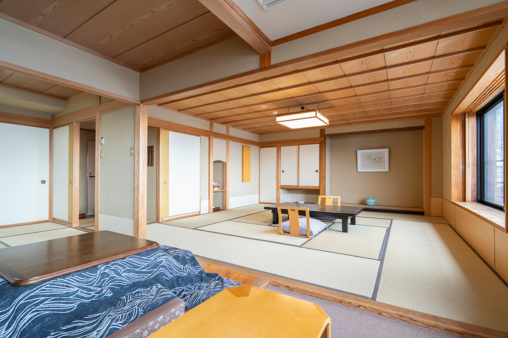
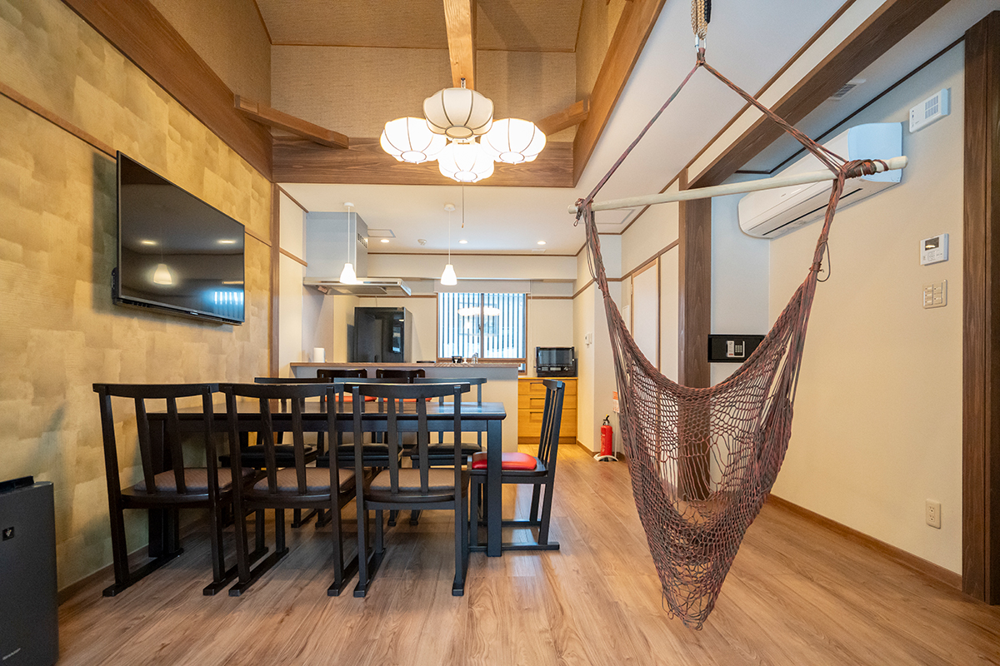
Ужин и завтрак в рёкане японские, из местных сезонных продуктов.
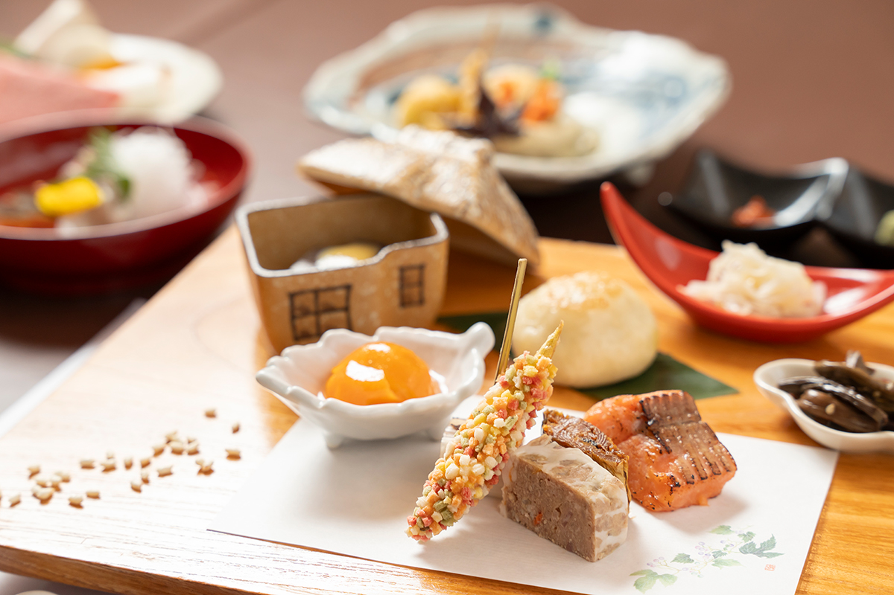
Рёкан «Сакая»
- Адрес
- префектура Нагано, уезд Симотакаи, деревня Нодзава онсэн, Тоёсато, 9329
- Телефон
- +81 269-85-3119
- Номера
- 29 в главном здании и 7 вилл
- Цены / Вход
- от 19 800 иен за ночь с ужином и завтраком (налог и сервис включены, налог на купание отдельно)
- Заезд / выезд
- 15:00 / 11:00
- Как добраться
- от станции Иияма (Хокурику-синкансэн) на автобусе «Нодзава онсэн лайнер» около 25 минут; на машине от съезда Тоёда-Иияма скоростной дороги Дзёсинъэцу около 25 минут
Ночевать
Лодж Такамасы Ёсидзаки для лыжников
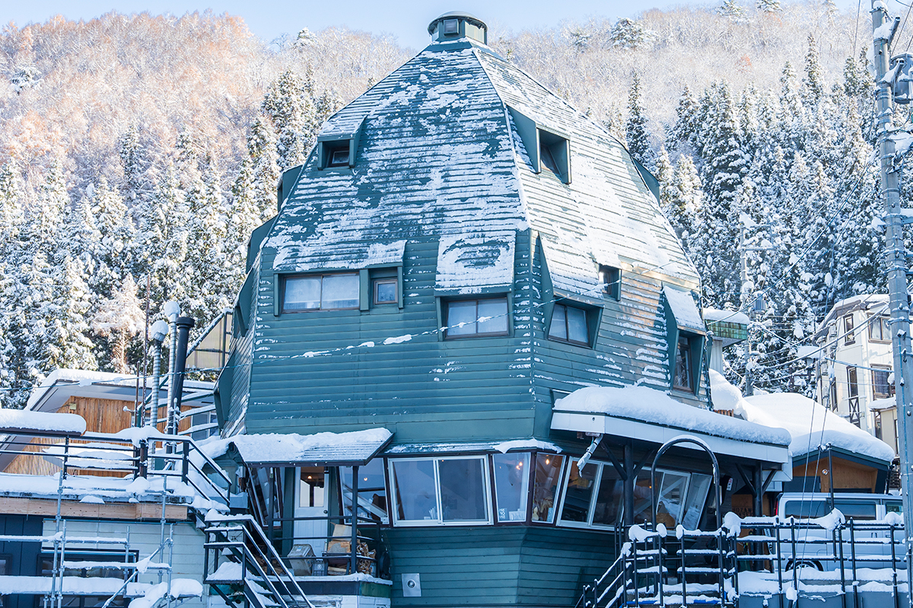
Ещё одна постройка, по которой узнают Нодзаву, стоит в минуте ходьбы от гондолы лыжного курорта. Это «Нодзава онсэн роддзи», дом в форме жёлудя, который трудно забыть, если видел хоть раз. Его спроектировал в 1969 году Такамаса Ёсидзака. Из лоджа можно выезжать на склон прямо на лыжах, но любят его ещё и за домашнюю обстановку, ради которой сюда возвращаются.
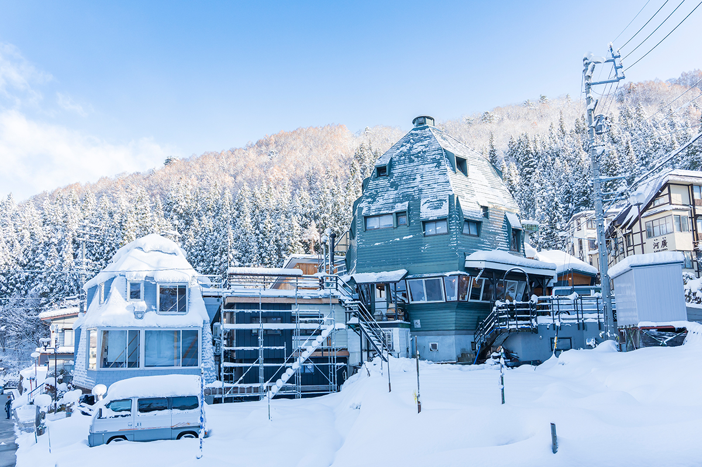
Хозяин лоджа открыл в деревне и другие места: винокурню Nozawa Onsen Distillery, где делают крафтовый джин и виски, и Music Bar GURUGURU. Он хочет, чтобы в Нодзаве было интересно в любое время года.
«Зимой лыжи, летом сапборды, осенью сбор грибов. Традиционные праздники вроде праздника Досодзин, которые здесь передаются из поколения в поколение. И улицы, по которым можно ходить от одного заведения к другому. Если смотреть на Нодзаву как на такой круговорот, откроете её заново»
хозяин лоджа
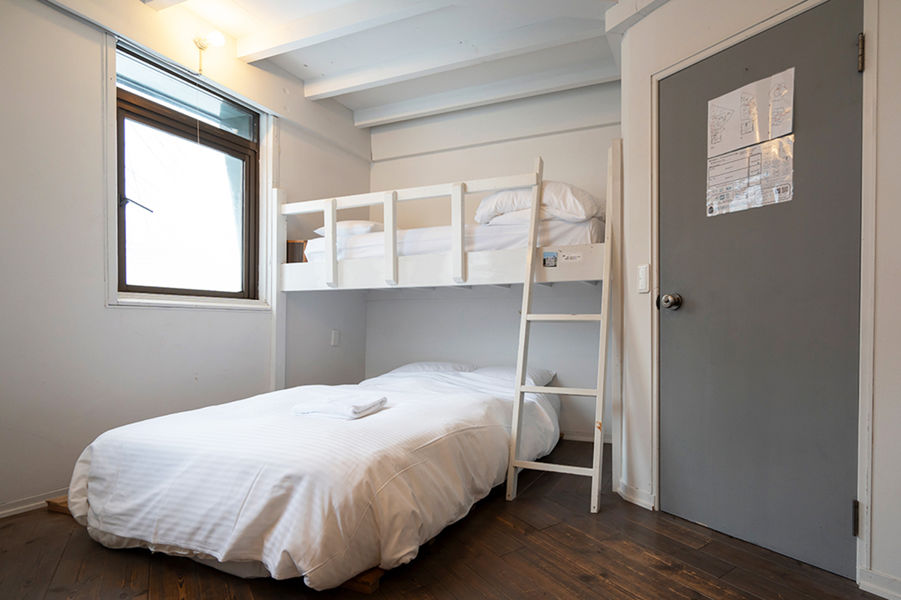
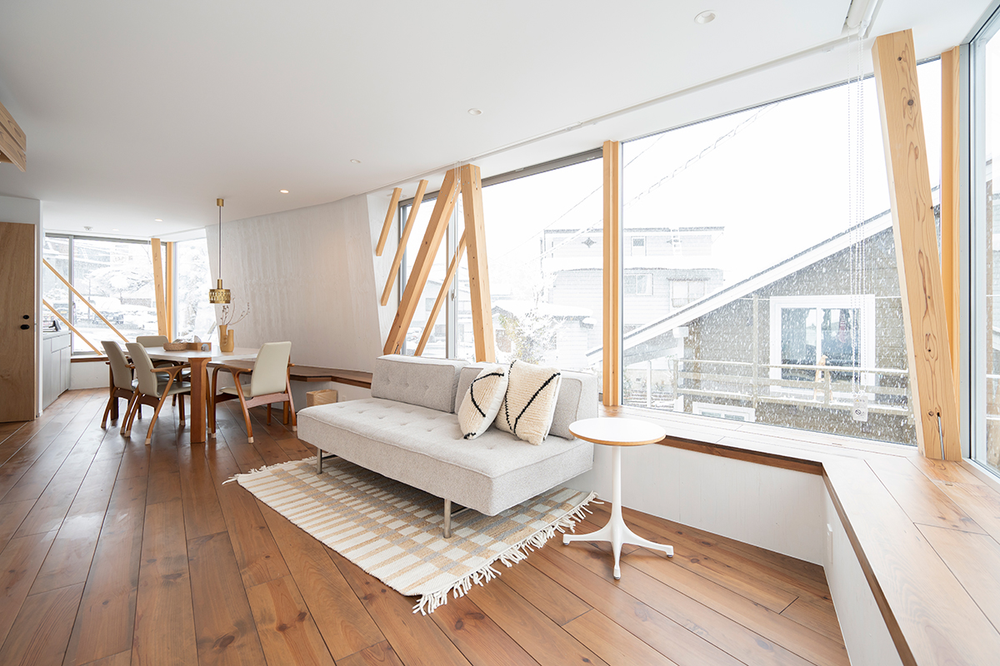
В сезон, с апреля по ноябрь, у лоджа ставят палатку-сауну.
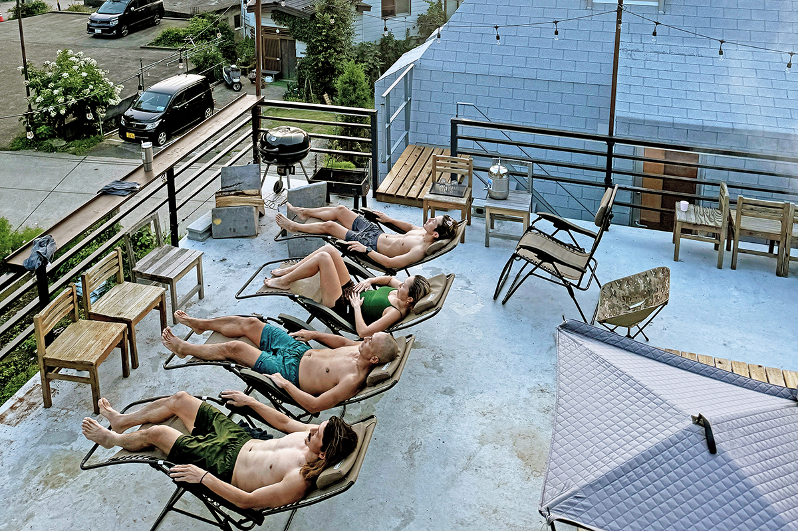
«Нодзава онсэн роддзи»
- Адрес
- префектура Нагано, уезд Симотакаи, деревня Нодзава онсэн, Тоёсато, Ою, 7812
- Телефон
- не публикуется
- Номера
- 10
- Цены / Вход
- от 7150 иен с завтраком (налог и сервис включены), зависит от сезона
- Заезд / выезд
- 15:00 / 10:00
- Как добраться
- от станции Иияма (Хокурику-синкансэн) на автобусе «Нодзава онсэн лайнер» около 25 минут
Прогулка
Пять мест на улицах онсэна
В центре деревни, который легко обойти пешком, больше ста ресторанов, баров и лавок. Старое и новое здесь перемешано, и по улицам хорошо гулять пешком.
Music Bar GURUGURU: музыка и вино снежной ночью
Бар открылся на Ою-дори, главной улице деревни. Старинные колонки ALTEC Model 19 мягко играют музыку, а в бокалах подают натуральные вина со всего мира, крафтовый джин и сакэ. Сюда приходят все, кто любит выпить под хорошую музыку, без разницы, откуда они и на каком языке говорят, и вечер рядом с жителями деревни делает поездку богаче.
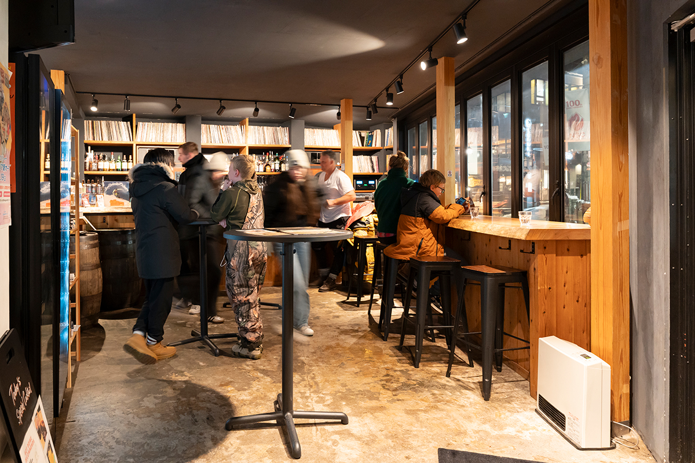
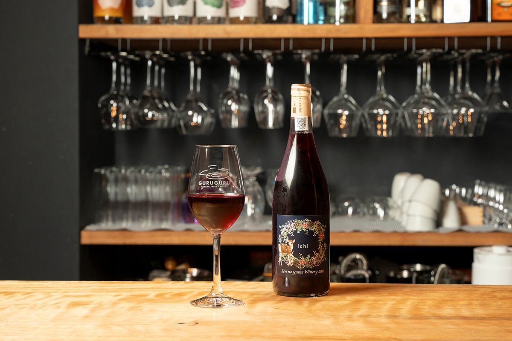
Music Bar GURUGURU
- Адрес
- префектура Нагано, уезд Симотакаи, деревня Нодзава онсэн, Тоёсато, 9492
- Телефон
- не публикуется
- Часы работы
- 17:00–22:00
- Выходные
- вторник
Nozawa Onsen Distillery: джин, который заметили во всём мире
Винокурня крафтового джина и виски заработала в 2022 году. Джин делают на здешней мягкой воде и травах, собранных в горах, и в нём чувствуется сам дух Нодзавы. Уже через год после открытия он получил золотую медаль в категории джина на одном из главных мировых конкурсов спиртного.
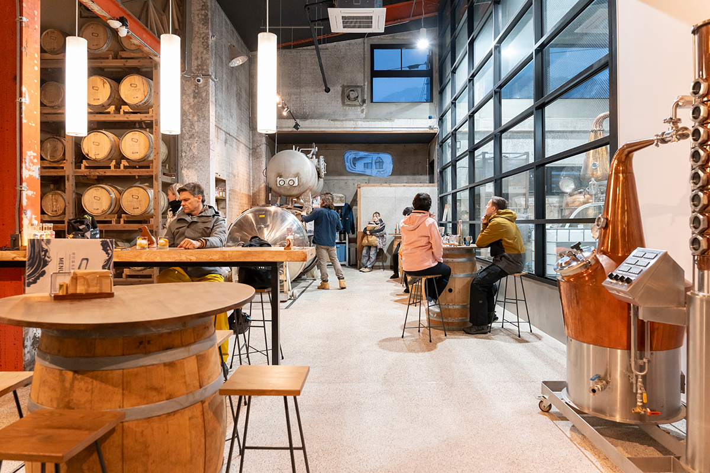
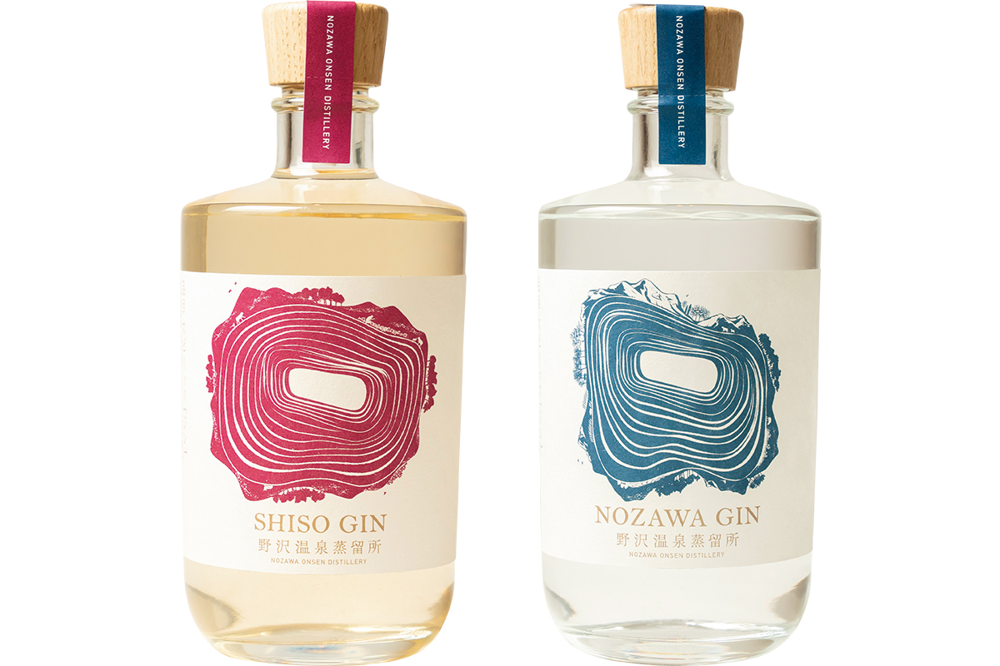
Nozawa Onsen Distillery
- Адрес
- префектура Нагано, уезд Симотакаи, деревня Нодзава онсэн, Тоёсато, 9394
- Телефон
- +81 269-67-0270
- Часы работы
- зависят от сезона, смотрите на сайте
- Выходные
- зависят от сезона, смотрите на сайте
Hotel & Jam Factory Haus St.Anton: овощи, сваренные в источнике
Шеф этой гостиницы раньше был профессиональным лыжником. Он соединяет опыт, накопленный за границей, технику французской кухни и еду снежного края. Гостиница строит всё вокруг кухни, которая радует и тело, и душу. Здесь готовят прямо в горячем источнике, как возможно только в Нодзаве с её круговоротом воды, и делают ферментированные блюда, которые родились из долгих суровых зим. Всё это подают в виде курса на выбор шефа, и есть его стоит не торопясь.
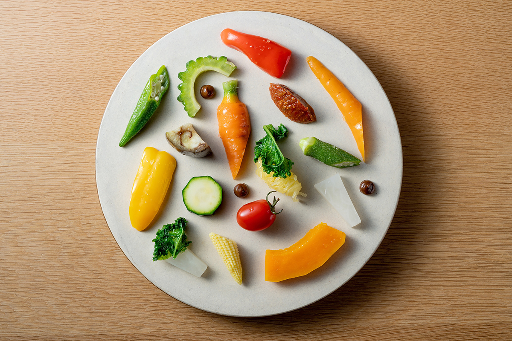
Гостиница работает как оберж, ресторан с номерами, так что после ужина можно остаться ночевать.
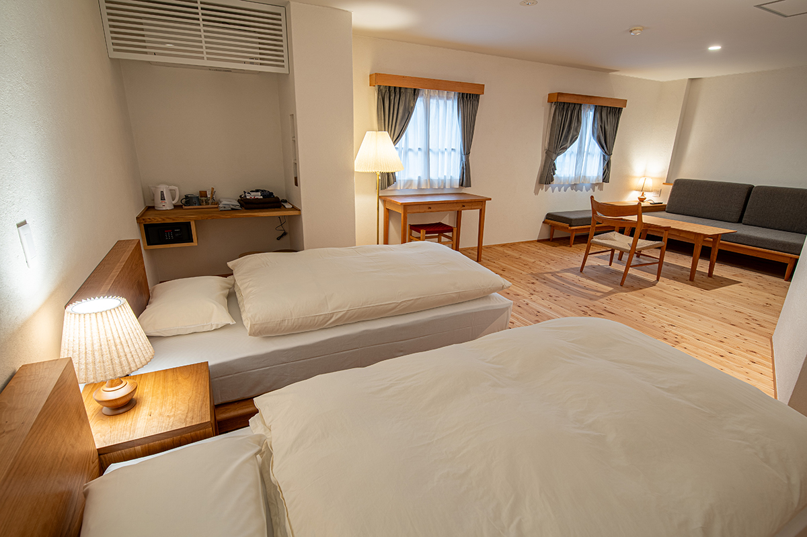
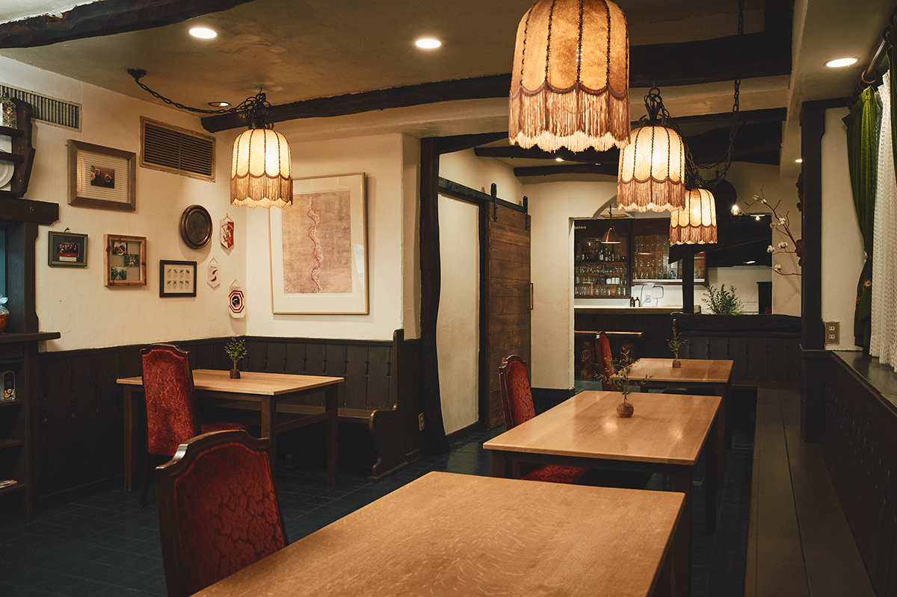
Hotel & Jam Factory Haus St.Anton
- Адрес
- префектура Нагано, уезд Симотакаи, деревня Нодзава онсэн, Тоёсато, 9515
- Телефон
- +81 269-85-3597
- Цены / Вход
- от 23 000 иен с ужином и завтраком (налог и сервис включены)
- Сайт
- st-anton.jp
Libushi: пиво на родниковой воде
Это пивной бар при пивоварне Anglo Japanese Brewing Company. Пиво варят на родниковой воде Нодзавы и лучшем натуральном сырье из Нагано и со всего мира. Двенадцать сортов крафтового пива делают время после купальни ещё приятнее.
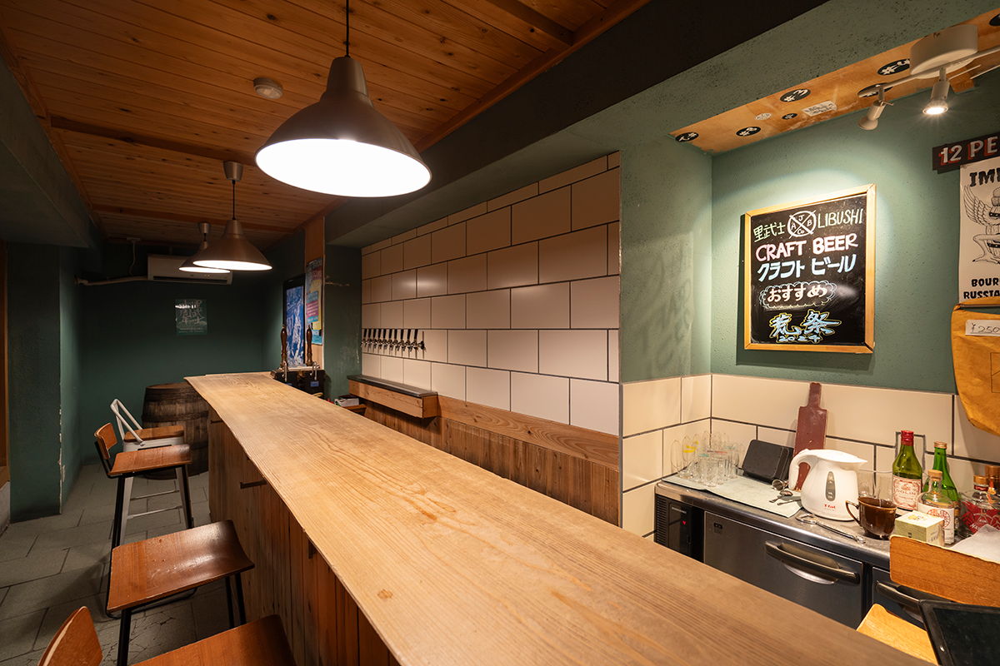
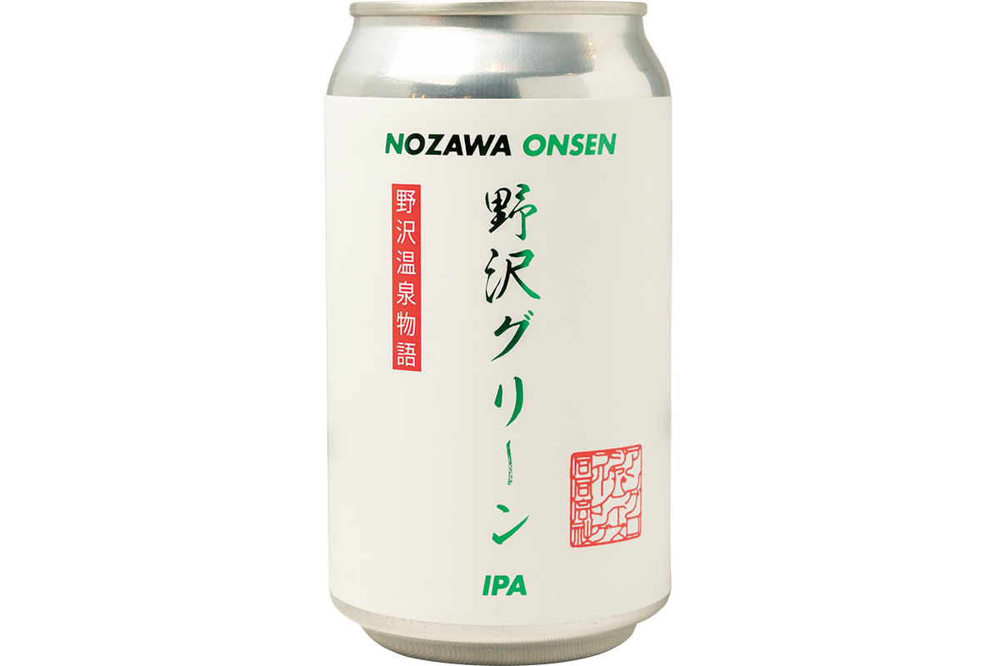
Libushi
- Адрес
- префектура Нагано, уезд Симотакаи, деревня Нодзава онсэн, Тоёсато, 9347
- Телефон
- +81 80-6930-3992
- Часы работы
- 15:00–23:00
- Выходные
- без выходных (с апреля по ноябрь понедельник–четверг)
- Сайт
- libushi.com
Пятое место прогулки, гостиница Sumiyoshiya у источника Огама, работает с 1869 года, и о ней есть отдельная статья.
Маршрут
Три дня в Нодзава онсэне
Первый день:
- 10:30 приезд в Нодзава онсэн;
- 11:00 соба в одной из деревенских лапшичных;
- 12:00 первая сотою, купальня Кума-но тэараи-ю;
- 13:00 Огама, главный источник и символ деревни;
- 15:00 заселение в рёкан «Сакая» или в Sumiyoshiya;
- 19:00 местные блюда в гостинице, например «торимаваси-бати»;
- 21:00 крафтовое пиво в Libushi.
Второй день:
- 9:00 снаряжение в COMPASS VILLAGE;
- 10:00 катание на лыжном курорте;
- 16:30 заселение в «Нодзава онсэн роддзи»;
- 17:30 купальня Ою;
- 18:30 ужин в Haus St.Anton;
- 21:00 музыка и вино в Music Bar GURUGURU.
Третий день:
- 11:00 утреннее купание в Синъю;
- 13:00 сувениры на Ою-дори;
- 14:30 дегустация джина в Nozawa Onsen Distillery;
- 17:00 отъезд.
Фото: Кадзуя Хаяси.